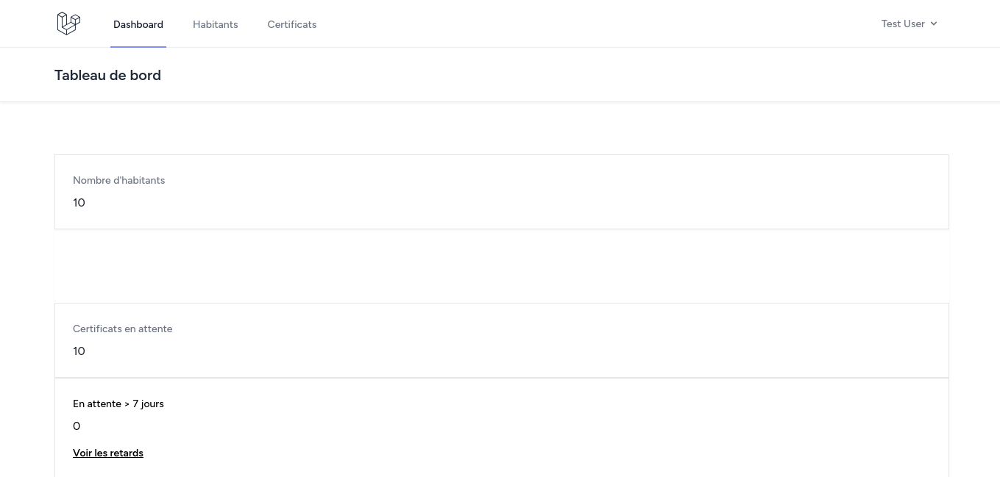
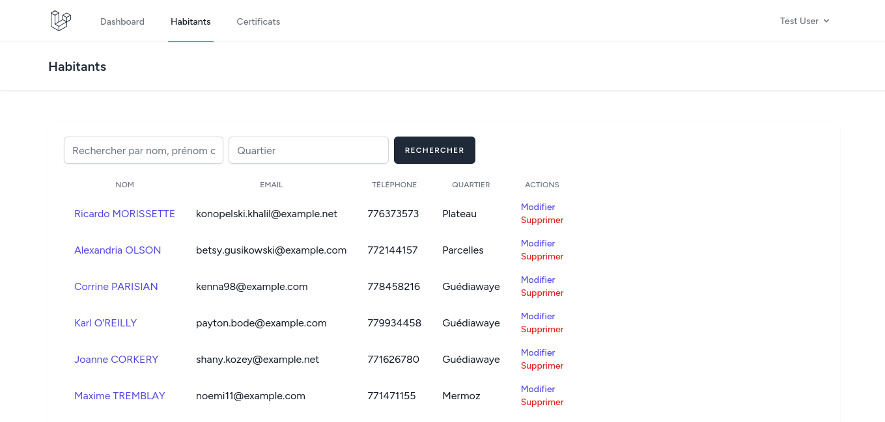
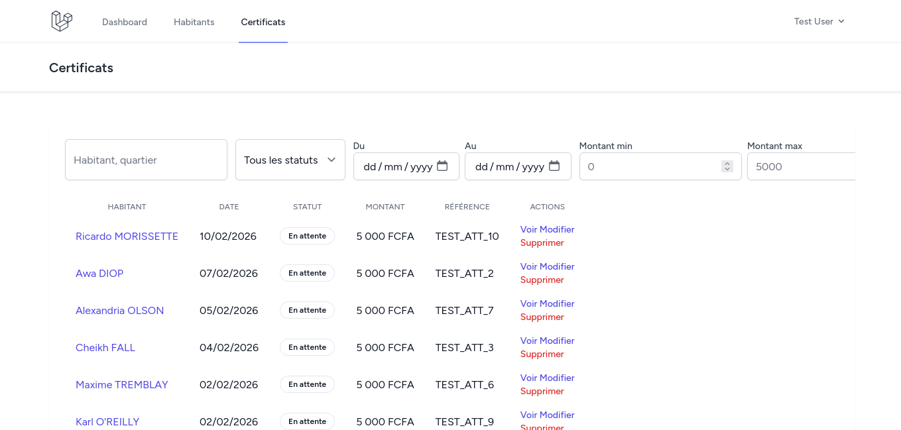

Bilan du projet
Gestion des habitants & certificats de résidence — Web2 (L3 ESTM)
Binôme : [Nom 1] / [Nom 2]
Encadrant : Ibrahima Gaye · Date : 11/02/2026
Stack Laravel 12 · Blade/Tailwind · PostgreSQL (Supabase) · PayDunya · DomPDF
1. Résumé exécutif
Plateforme web de gestion des habitants et de leurs certificats de résidence, avec paiement en ligne PayDunya, génération PDF, filtres avancés, exports CSV/PDF et alertes sur les certificats en retard. Déployable sur PostgreSQL/Supabase.
2. Objectifs & périmètre
- Gérer les habitants (profil, quartier, majorité légale).
- Émettre et suivre des certificats payants, téléchargeables en PDF.
- Authentifier via Breeze et sécuriser l’accès.
- Intégrer un PSP (PayDunya) et préparer les entités du MCD complet.
3. Architecture & choix techniques
Backend
- Laravel 12 (PHP 8.2)
- Services (PayDunyaService)
- FormRequests pour validations
Front
- Blade + Tailwind (Vite)
- Composants : badges statuts, boutons
Données
- PostgreSQL sur Supabase
- Index sur statut, dates, quartier
- Factories + seeders de démo
PDF & Paiement
- DomPDF pour certificats & exports
- PayDunya sandbox/live via .env
4. Fonctionnalités livrées
- Habitants : CRUD, recherche, validation d’âge (≥18 ans), pagination.
- Certificats : statuts (en_attente, payé, délivré), PDF, montant configurable, lien habitant.
- Paiement : création facture PayDunya, callbacks retour/annulation/IPN.
- Filtrage : statut, date du/au, montant min/max, retards > X jours.
- Exports : CSV/PDF basés sur les filtres actifs.
- Dashboard : revenus, habitants, certificats en attente et en retard.
- UX/A11y : badges colorés, alertes retards, messages d’erreur, fond doux, aria-labels.
- Paramétrage : `config/certificat.php` (montant, labels, couleurs, seuil retards).
5. Sécurité, conformité, qualité
- Validations via FormRequests ; blocage d’un second certificat « en attente » pour un habitant.
- Clés PayDunya uniquement en .env ; emails uniques ; recherches case-insensitive PostgreSQL.
- Config centralisée ; structure prête pour logs structurés/events.
6. Données & indexation (PostgreSQL/Supabase)
| Table | Champs clés | Index |
|---|
| habitants |
nom, prenom, email unique, téléphone, date_naissance, quartier |
quartier |
| certificats |
habitant_id (FK), date_certificat, statut, montant, reference_paiement |
statut, date_certificat, created_at |
7. Déploiement & configuration
- DB : `DB_CONNECTION=pgsql`, `DB_HOST/PORT/NAME/USER/PASSWORD` (Supabase, SSL recommandé).
- PayDunya : `PAYDUNYA_MODE`, `PAYDUNYA_MASTER_KEY`, `PAYDUNYA_PRIVATE_KEY`, `PAYDUNYA_TOKEN`.
- App : `APP_URL`, `APP_ENV`, `APP_KEY`, `MAIL_*` pour la vérification email.
Install & build
cp .env.example .env
composer install
php artisan key:generate
php artisan migrate --seed
npm install && npm run build # ou npm run dev
php artisan serve
8. Tests de validation rapide
- Habitant < 18 ans : échec attendu.
- Certificat : refus d’un second « en attente » pour le même habitant.
- Paiement sandbox : en_attente → payé (callback) → délivré au téléchargement PDF.
- Exports CSV/PDF : vérifier filtres (statut, dates, montants).
- Retards > X jours : badge et filtrage depuis dashboard.
9. Risques & améliorations prévues
- Sécurité PayDunya : signature/HMAC, timeouts + retries.
- Rôles/policies : admin, agent, lecture seule.
- Fiabilité : soft deletes, audit trail, cron/queue pour re-vérifier les factures en attente.
- PDF : QR de vérification, numéro séquentiel, branding collectivité.
- MCD complet : Quartier, Maison, Propriétaire ; import CSV quartiers.
- Tests auto : flux paiement (Http::fake), exports, policies, retards.
10. Captures d’écran



11. Conclusion
Les exigences (habitants, certificats, paiement, auth, PDF) sont couvertes. L’intégration Supabase/PostgreSQL est prête pour la production grâce aux index et aux paramètres centralisés. Le backlog cible la sécurité PayDunya, les rôles et la complétude du MCD.